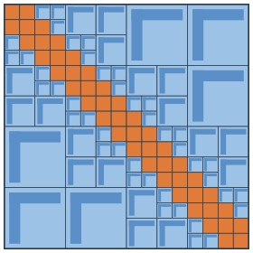

tsne-h2pack¶
t-SNE in linear time, for millions of points, in 2D or 3D.
tsne-h2pack computes the all-pairs repulsion of t-SNE with an H² matrix, so every iteration costs O(N) instead of O(N²). It follows the scikit-learn interface, so most existing code needs only a new import; see the differences.
pip install tsne-h2pack
from tsne_h2pack import TSNE
Y = TSNE(n_jobs=8).fit_transform(X)
Wheels for Linux x86-64 and Apple Silicon macOS, Python 3.10–3.14.
1,306,127 mouse brain cells, 39 cell types. 106 seconds end to end on 12 cores of an Apple M5 Max laptop.
fit_transform with scikit-learn's parameter namesThe idea in one picture¶

The repulsive force needs the product of a dense N × N kernel matrix with the embedding. tsne-h2pack never forms that matrix.
- Nearby points interact through small dense blocks along the diagonal, computed exactly.
- Distant groups interact through low-rank blocks, whose bases are nested across the levels of a spatial tree.
The nesting makes both building and applying the matrix linear in N, at a chosen accuracy. One product then gives the full repulsive force and its normalization. Read how it works →
Time grows roughly linearly with N¶
Optimization time on 12 threads (Apple M5 Max), 1000 iterations, mouse brain cells in 50 PCA dimensions:
| Embedding | 50K points | 100K | 250K | 500K | 1M |
|---|---|---|---|---|---|
| 2D | 2.2 s | 3.5 s | 7.7 s | 15.1 s | 27.8 s |
| 3D | 7.4 s | 17.6 s | 39.3 s | 106.6 s | 172.4 s |
In 2D, doubling the data roughly doubles the time. Going from 1 to 12 threads speeds the optimization up 3.8–6.2× in 2D and 7.4–10.2× in 3D, depending on size. The advantage shows from about 50K points; below about 10K, any t-SNE library is fast. Full benchmarks →
Explore the documentation¶
tsne_h2pack.TSNE.
Using tsne-h2pack in research? See how to cite it.